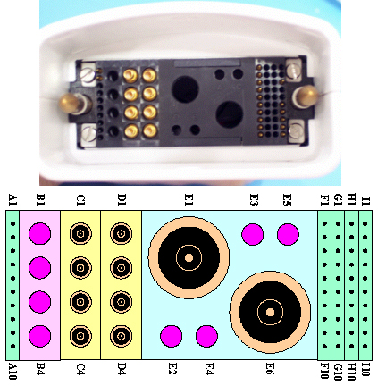

- 00000018WIA3080FD20GYZ
- id_131071553.0
- Aug 29, 2019 1:56:42 AM
3.0T HD Breast Array Coil Troubleshooting
Personnel Requirements
| Required Persons | Procedure |
| 1 | 30 min |
Overview
The following tips can be used to troubleshoot common problems with the 3.0T HD Vibrant Breast Array Coil by GE.
Preliminary Requirements
Tools and Test Equipment
Required Conditions
Procedure
Receiving No Signal
Problem:
Unable to pre-scan or scanning and not receiving a signal.
Possible Solution:
-
Verify the following:
-
Landmark is correct and the cradle is not unlatched.
-
-
Perform a continuity check on the output cable (Section 4.4). The continuity check must be performed by a GE authorized Service Engineer.
-
Verify that the coil is positioned with the cable exiting toward the bore.
-
Verify that the cable is not looped or crossed.
There may also be a problem at the system interface port. Try scanning in other ports as well. If you still cannot get a signal, try to scan (transmit and receive) with the body coil. For this test, be sure to remove the imaging coil from the magnet bore before you scan with the body coil. If you still receive no signal the problem probably lies with the MR system. If the scan completes successfully, there is probably a problem with the breast coil. Contact GE for further assistance. If you are unable to scan with the substitute coil, there may be a system problem related to this particular coil type.
Image Quality
Problem:
Poor IQ, shaded images, or if MCQA fails
Possible Solution:
-
Perform a continuity check on the output cable (Section 4.4). The continuity check must be performed by a GE authorized Service Engineer.
-
Verify that there are no loops in the cables.
-
Verify that there are no metal or ferromagnetic objects close to the coil, patient or magnet (i.e., safety pin, hair pin).
-
Verify that the coil is properly positioned.
-
Verify that your center frequency is within the frequency adjustment range for your system.
-
Verify that the R1, R2 and TG values from the pre-scan are within normally expected ranges.
If you have not done so already, perform a system Quality Assurance MCQA test. If the values you obtain do not fall within normal operating parameters, investigate this further by performing a phantom scan with the body coil. For this test, be sure to remove the imaging coil from the magnet bore before you scan with the body coil. If you still have the same problems, there is probably an MR system problem. If the body coil scan is satisfactory, acquire a scan using both another coil of the same type (receive-only, phased array). If the image quality is visibly improved, there may be a problem with the breast coil. Contact GE for further assistance. If the image quality still suffers, there may be a system problem related to imaging with this type of coil.
Artifacts
Problem:
There is a black line or signal void on the image.
Possible Solution:
Verify that there is no metal present in the area being scanned in or on the patient.
Output Cable Check
Visual check
Before removing the cable assembly from the coil, visually inspect all coaxial connectors and pins on the system plug. If there are any broken, deformed or recessed pins or coaxial connectors, replace the cable assembly.
Remove the cable assembly from coil, refer to Cable Replacement.
RF Signal Channels Check
The center pins of the System Connector receive coaxial connectors are extremely fragile. Do not attempt to make any measurements at these center pins.


The following procedure will rule out a short to GND for each of the signal pins detailed in the following table. This check does not determine continuity for each of the MC signal connections.
With the coil cable disconnected from the preamplifier box, use a multimeter (Set to Continuity) to assure an open circuit condition exists between the designated pin and GND for each signal channel shown in Table 1.
| Coil Side Connector RF GND Shield | Coil Side Connector RF Center Pin |
| J8 | J8 |
| J7 | J7 |
| J5 | J5 |
| J6 | J6 |
| J15 | J15 |
| J16 | J16 |
| J14 | J14 |
| J13 | J13 |
If one or more of the readings indicate a short, replace the cable. If all of the above readings indicate an open circuit condition, proceed to the DC Lines Continuity Check.
DC Lines Continuity Check
With the coil cable disconnected from the preamplifier box, use a multimeter (set to continuity) to determine continuity between the designated pins for each control channel shown in Table 2.
| System Side Connector Pin | Coil Side Connector |
| F1 | P3-1 |
| F2 | P3-2 |
| F3 | P3-4 |
| F4 | P3-3 |
| F5 | P4-2 |
| F6 | P4-1 |
| F7 | P4-3 |
| F8 | P4-4 |
| I3 | P6-2 |
| I6 | P6-1 |
| I7 | P5-2 |
| I8 | P5-1 |
If any pair indicates an open, replace the output cable.